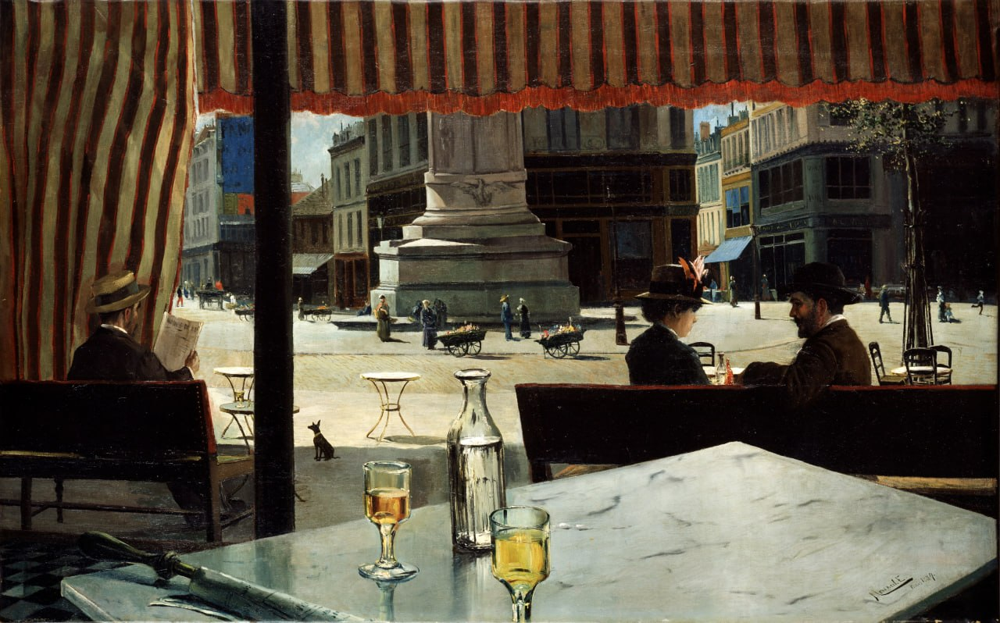

Элисео Мейфрен-и-Роч
Plaza de París (Площадь Парижа), 1887

Национальный музей Прадо, Мадрид
Коллекция Raymond Barry Waterhouse Приобретение музеем, 2004 г.
Хотя в начале своей карьеры Элиcео Мейфрен был известен прежде всего как художник-маринист, он также создавал городские пейзажи Парижа, города, который он часто посещал с 1879 года. Он также писал картины на темы, связанные с французской столицей, например, работу под названием « En el café», представленную на Национальной выставке изящных искусств 1884 года. Три года спустя, в том же городе, он написал картину «Plaza de París». На ней изображено кафе на площади Клиши. Эту площадь можно узнать по основанию колонны на заднем плане, которая является частью памятника маршалу Монсе, работы скульптора Амедея Дублемара. Выбор этой площади, расположенной недалеко от Монмартра, имеет важное значение, поскольку она была популярным местом для моделей художников, многие из которых имели свои мастерские в окрестностях, особенно на бульваре Клиши. Это место, расположенное совсем рядом с местом событий, было изображено многочисленными художниками, включая Синьяка в 1886 году и Ван Гога в 1887 году. Сама площадь Клиши была написана в 1874 году Джованни Болдини, затем Ренуаром около 1880 года и Луи Анкетином в 1887 году в работах, совершенно отличающихся по стилю от работ Мейфрена, который по-прежнему оставался натуралистическим. Вскоре после этого Рамон Касас и Сантьяго Русиньоль, каталонские художники и друзья Мейфрена, также писали сцены в кафе в соседнем Монмартре. Около 1892 года каталонский художник Франсиско Миральес написал более широкий вид площади Клиши (ныне разрушена; ранее находилась в музее Бреста). Композиция демонстрирует современную технику: столик в кафе расположен под углом и обрезан на переднем плане, в манере Дега, как будто художник вовлекает зрителя в сцену. Этот кажущийся небрежным аспект кадрирования также очевиден в том, что газета и дно одного из стаканов с алкоголем кажутся обрезанными нижним краем холста. Однако фронтальное расположение скамеек нарушает эту идею и, вместе с навесом, обрамляет упорядоченный вид города в тишине весеннего полудня, оживлённого уличными цветочными лавками. Компактная детализация плоскостей и объёмов, подчёркнутая чётким светом, очерчивающим контуры предметов, характерна для раннего периода творчества художника, в котором он изображает отражения на стекле плотными мазками, всё ещё далекими от импрессионистского стиля его поздних работ. Хотя её личность не может быть установлена с уверенностью, сидящая женщина похожа на жену художника, Марию Долорес Пахарин-и-Вальс, на которой он женился в 1882 году и которую изобразил в 1883 году в своей парижской мастерской.